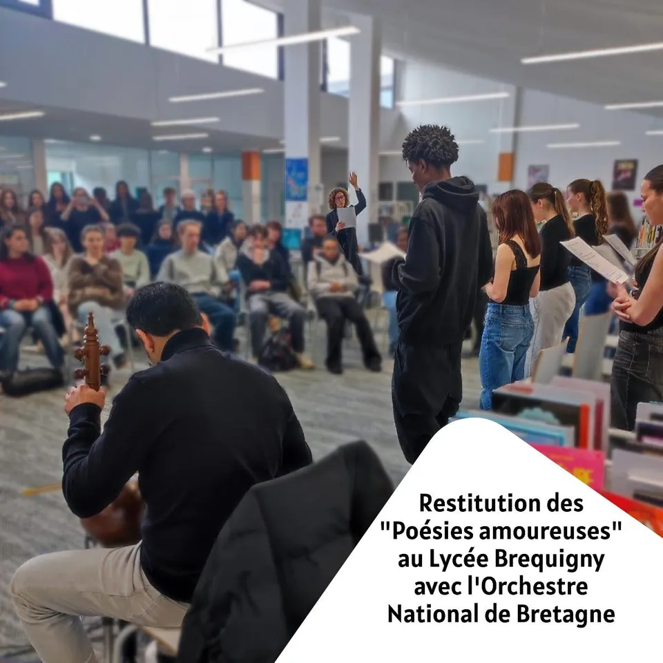
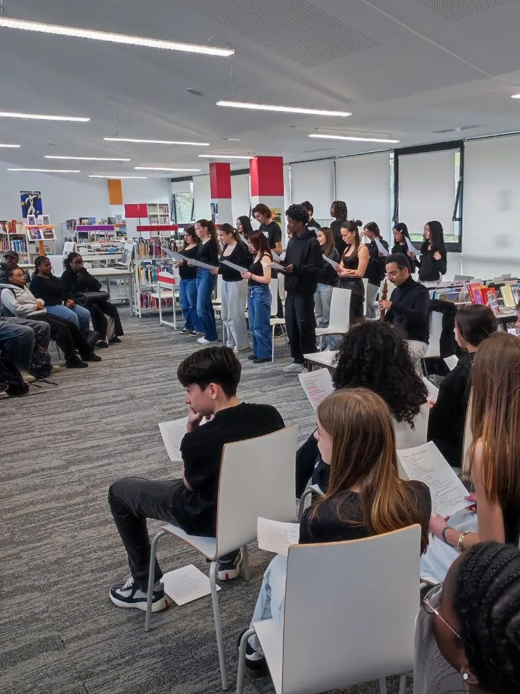
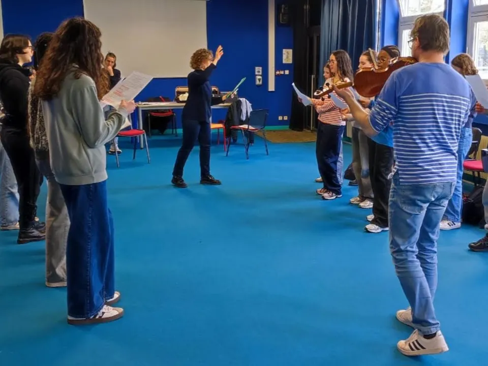

Poésies amoureuses
Projet mené avec deux classes de seconde du lycée Bréquigny, à Rennes. Accompagnés par Élise Truchard, le musicien Soroush Kamalian et le violoniste David Chivers, les élèves ont exploré la lecture à voix haute de poèmes amoureux venus de différentes époques et traditions littéraires, de Louise Labé à Farîd-Ud-Dîn ‘Attar.
Lecture musicale publique, mise en musique par Soroush Kamalian
Vidéo : lien Vimeo à corriger